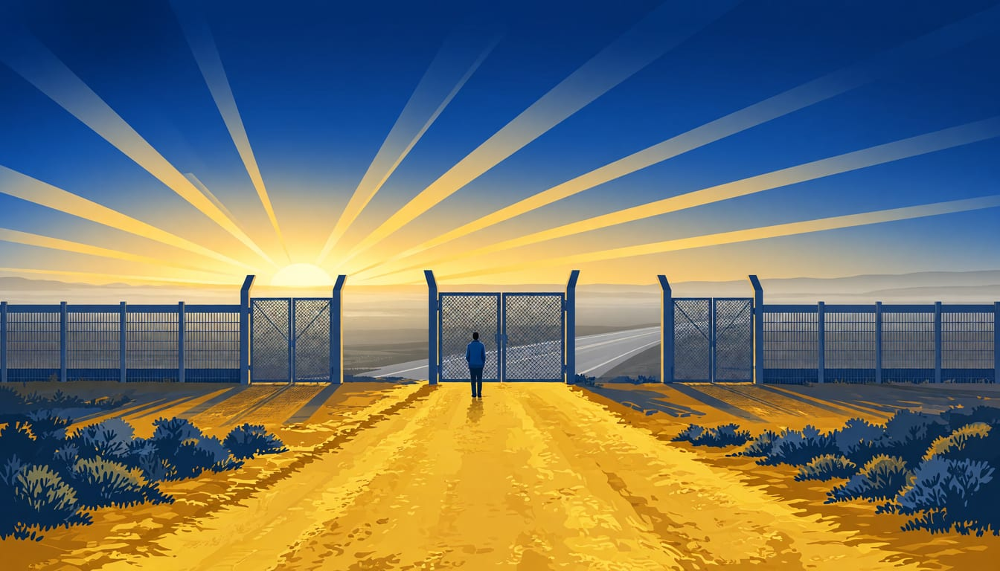

Estonia to propose closing all land border crossings with Russia from December
The proposal follows a sabotage attempt on the Estonian defence company Threod Systems commissioned by the GRU. Foreign minister Margus Tsahkna plans to discuss more pressure on Russia at Monday's meeting of EU foreign ministers in Brussels.

Estonia's interior minister will propose closing all its land border crossings with Russia to pedestrians and vehicles from the start of December. Interior Minister Igor Taro said after talks with the Prime Minister that the moment for a complete closure had arrived. On 14 November, eight Latvian nationals were detained as Latvia's State Security Service (VDD) and Estonia's Internal Security Service (KAPO) stopped an attempted sabotage attack on the Estonian defence company Threod Systems together.
Foreign Minister Margus Tsahkna has contacted his Lithuanian, Latvian and Finnish counterparts about the closure and informed colleagues across the EU. He said Estonia is sending a clear message to the Kremlin: Russia's hostile actions come at a cost. The more aggressively Russia behaves, the narrower its room for manoeuvre becomes. Tsahkna plans to discuss more pressure on Russia at Monday's meeting of EU foreign ministers in Brussels.
The government plans to close them from 1 December 2026, in response to a sabotage attempt on Threod Systems commissioned by the GRU, Russia's military intelligence agency. Three road crossings handle the traffic: Narva, Luhamaa and Koidula, which now serve pedestrians and cargo. In the early hours of a Saturday, an attempt was made to set the Threod Systems building in Viimsi on fire. No one was injured, and the company kept its production and delivery running.
People caught on the wrong side still have about two weeks to get home, the Interior Ministry said. Lithuania's Foreign Minister Kęstutis Budrys urged Europe to consider putting the GRU and other sabotage services on the terrorist list. Andrii Sybiha wrote on X that Estonia proved Russian sabotage can and should have consequences beyond simple diplomatic condemnation. Such an approach, he wrote, deserves broader support across Europe.
The Interior Ministry has not said whether the closure will be temporary or indefinite. Maria Zakharova, the Russian Foreign Ministry spokeswoman, criticised the closure plans. She said that if the plans to close the border are Estonia's real plans, they fit into another outburst of aggressive and unbridled Russophobia.